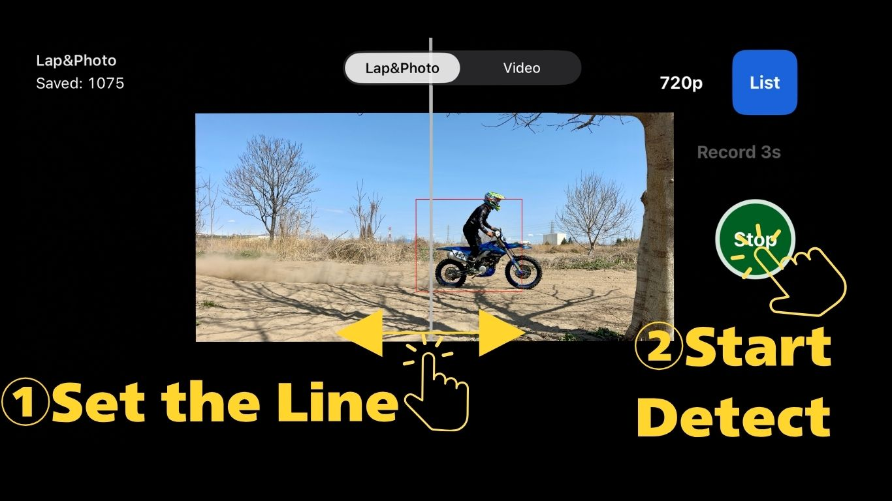
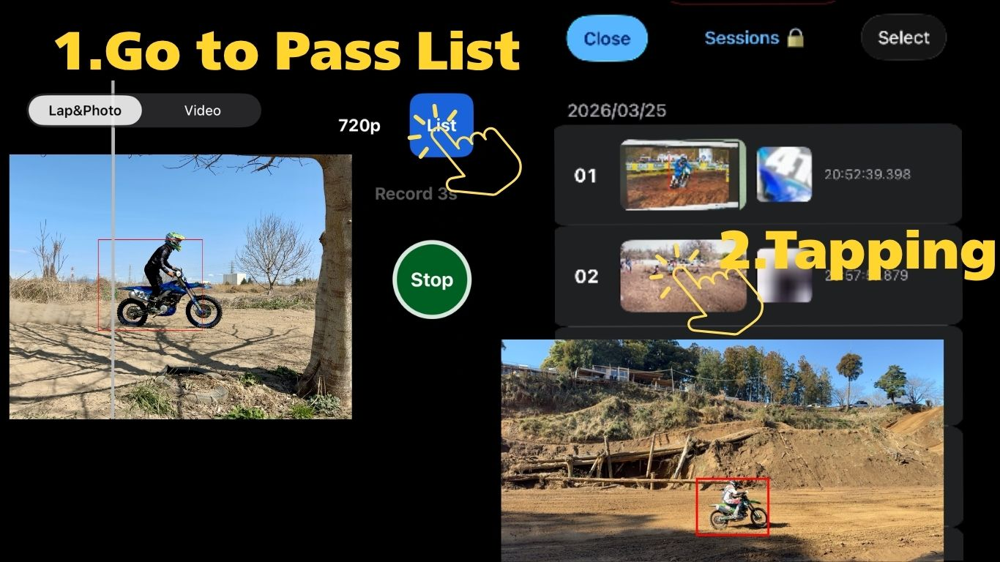
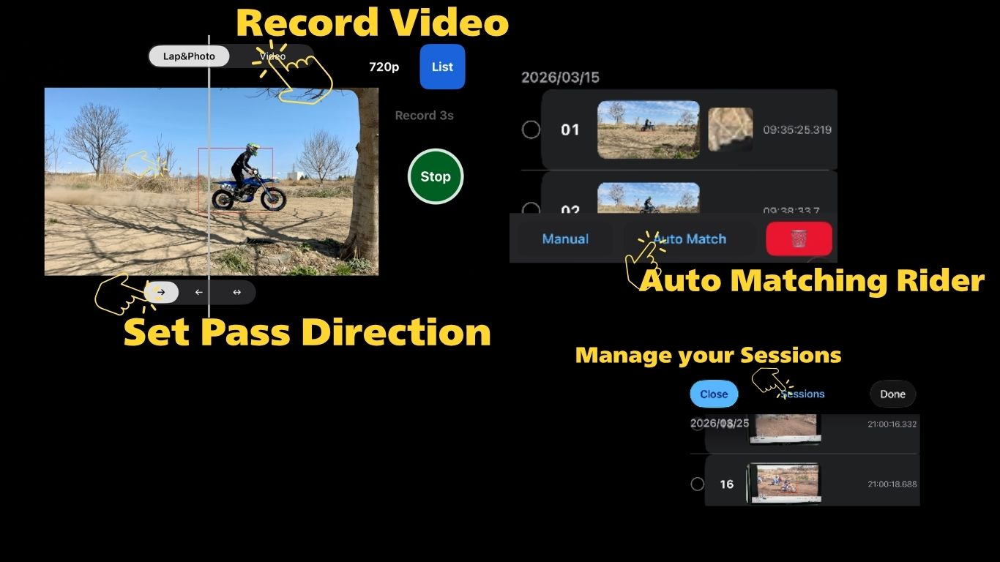
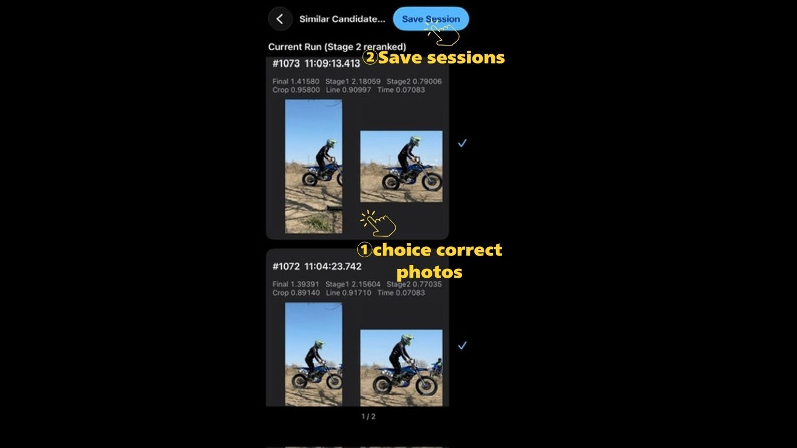
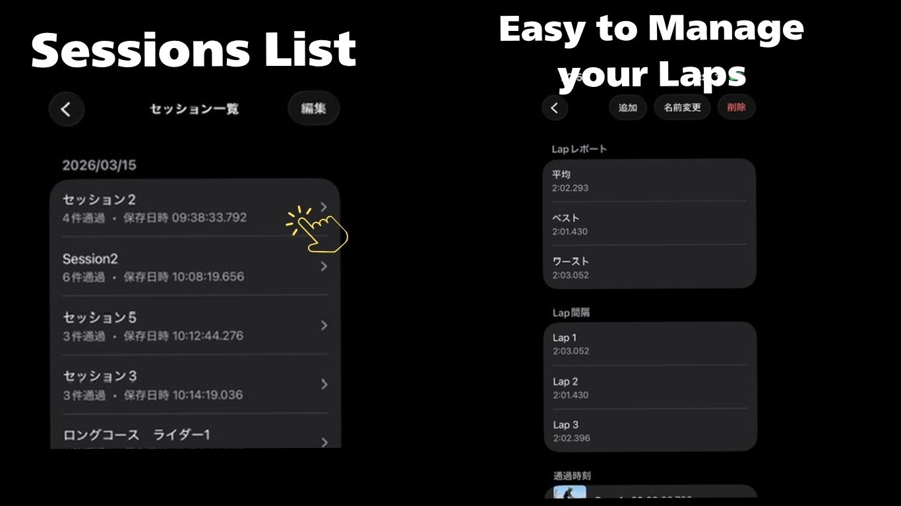

Step 1
Set the line and start detection
Place your iPhone where riders pass clearly in front of the camera. Adjust the pass line with your finger, start detection, and open the pass list after your ride.

Ponderless is a transponder-free lap timer built for motocross and enduro practice. Just place your iPhone beside the track, ride past the camera, and review your passes after the session.
No GPS. No signal needed. Everything runs on your iPhone.
Place your iPhone where riders pass clearly in front of the camera. Adjust the pass line with your finger, start detection, and open the pass list after your ride.

The pass list shows captured pass images in chronological order. Tap each pass to view it in more detail with or without the detection overlay. You can also save the image to your Photos app.

Select two or more passes to calculate lap times. You can check the result on the lap result screen. ⚠️ In the free version, all passes must be selected manually. In Pro, candidate passes can be suggested automatically.
Pro includes video recording, riding direction settings, automatic pass suggestions, and session saving. It is recommended for riders who want a smoother way to measure and organize their sessions.

Select one or more passes and tap the auto-match button to search for matching candidate passes automatically (up to 20 candidates). Review the suggested results, choose the correct passes, and save them as a session.

Open a saved session to view its lap results. You can save one session per rider for each measurement, making it easier to compare your progress over a day of practice or see who was fastest in your group. Sessions are organized by date, so you can revisit previous rides and compare your lap times over time.

Measure lap times by yourself with just an iPhone.
View on the App Store